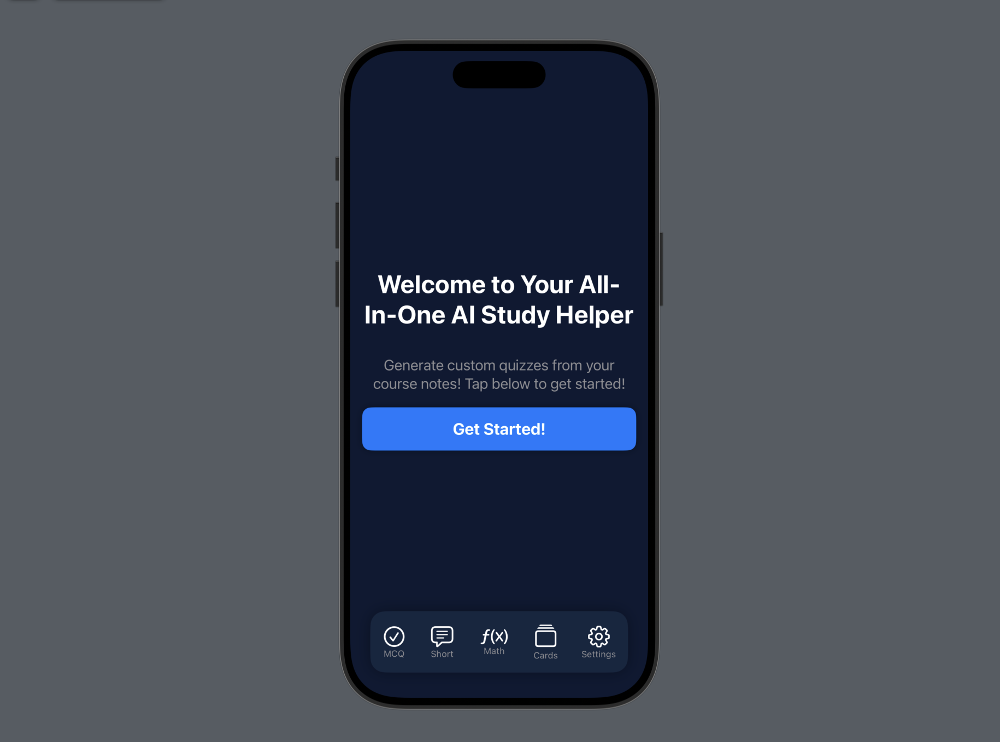
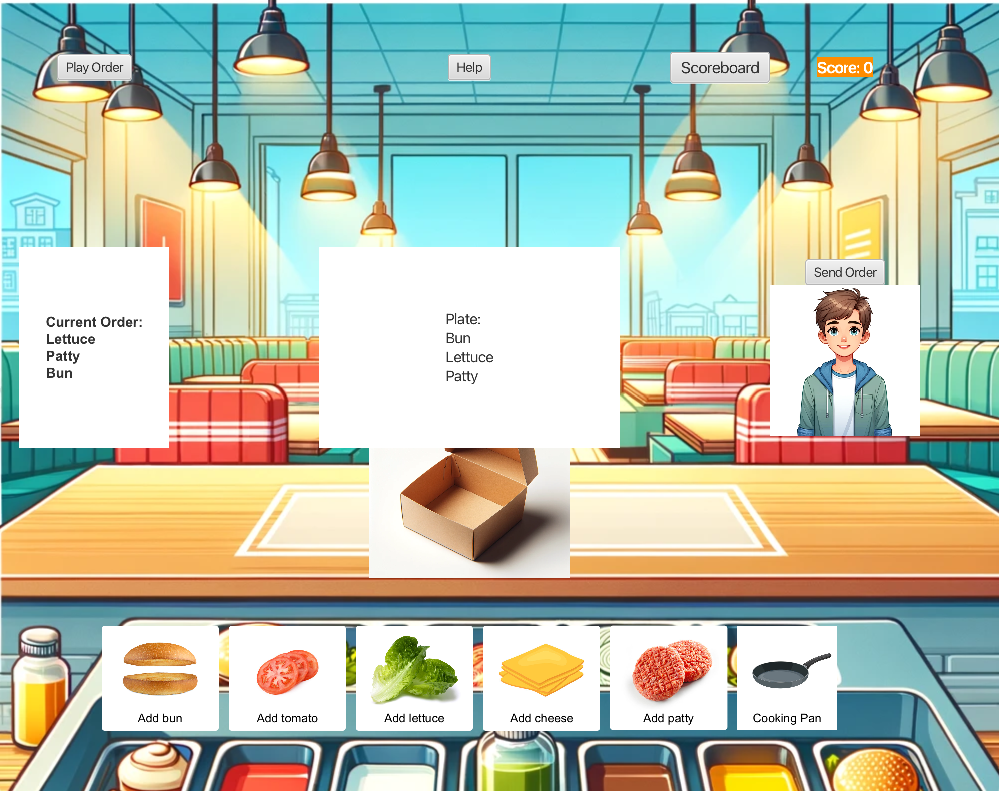
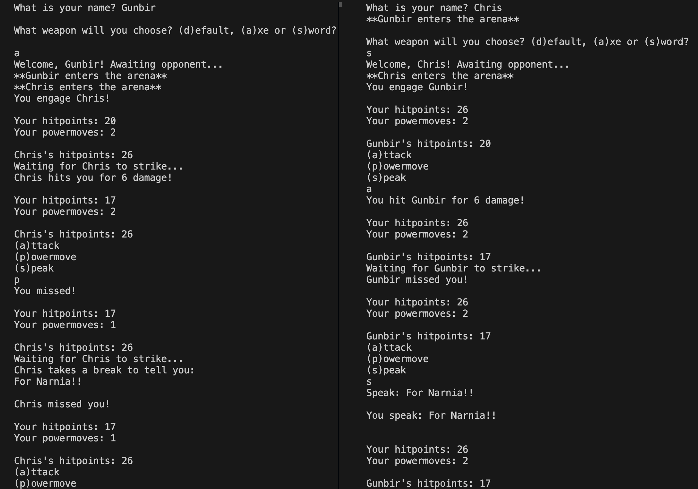

AI-Powered Portfolio Visualizer & Financial Risk Monitoring Platform (In Development)
This project is a portfolio visualization and financial risk monitoring platform designed for informed investors
who actively manage their own portfolios. Designed in a team of six, the platform bridges the gap between professional financial
tools and manual spreadsheets by offering intuitive, data-driven insights into portfolio risks
and market sentiment. The platform leverages AI, data visualization, and optimization
techniques to provide actionable investment strategies.
Features
- Efficient Frontier Optimization – Helps users visualize the optimal portfolio allocation
for balancing risk and return.
- AI-Powered Twitter/X Sentiment Analysis – Monitors market sentiment in real time
using AI-driven analysis of social media trends.
- Risk Metric Heatmaps – Displays key risk indicators such as Sharpe ratios and
Fama-French factors for better portfolio risk assessment.
- kNN-Based Equity Analysis – Uses machine learning to find similar equities based on
returns, volatility, and sector for smarter diversification.
- Real-Time Risk Monitoring – Provides up-to-date analysis to help investors react quickly
to market changes.
Motivation
Many investors understand financial concepts but lack user-friendly tools to apply them effectively.
Existing solutions are either too complex or too basic, leaving a gap in the market. This platform
is designed to empower self-directed investors with intuitive yet powerful risk management features,
helping them optimize their portfolios with confidence.
Time of Completion: End of March 2025
All-In-One AI Study Helper (In Development)

The All-In-One AI Study Helper is an all-in-one AI-powered study companion designed to streamline the learning process
by integrating multiple study tools into a single platform. Built using Swift and SwiftUI for a seamless and modern iOS
experience, the app is designed for students who need efficient and customized learning support. It leverages Meta’s
open-source Llama models to generate high-quality quizzes, short-answer prompts, and math problems based on users’ course
notes.
Features
- Custom Quiz Generation – Automatically creates multiple-choice and short-answer quizzes from uploaded course notes
(PDFs/Images).
- AI-Powered Problem Solving – Generates math problems and solutions tailored to coursework.
- Streamlined User Experience – A sleek and modern UI with a dark mode-friendly deep blue aesthetic.
- Intuitive Navigation – A bottom navigation bar for quick access to Multiple-Choice, Short Answers, Math Problems,
Cue Cards, and Settings.
- Progress Tracking – Displays question counts, correctness feedback, and performance summaries upon quiz completion.
- Interactive Learning – Engaging UI elements, such as color-changing buttons for quiz responses and structured
feedback messages based on performance.
Motivation
As a computer science student, I’ve always struggled to find a single app that effectively supports both theoretical and
mathematical learning. Balancing CS concepts with math-heavy coursework is challenging, and existing study tools often
focus on only one aspect. To solve this, I decided to build an all-in-one AI-powered learning assistant that adapts to
various study needs, making learning more seamless and efficient.
Estimated Time of Completion: Mid-March 2025
Portfolio Website
This portfolio website was designed with a focus on creating a sleek, modern aesthetic, drawing
inspiration from glass-like design principles. I utilized HTML and CSS for the core structure and
styling, and incorporated particles.js to create a visually engaging and dynamic background. To
ensure optimal user experience across different screen sizes, I implemented a responsive navigation
menu (often referred to as a "hamburger menu") using JavaScript, providing easy access to site content
on smaller screens.
GitHub
Burger Restaurant Simulator

This project involved the design and development of a JavaFX-based game in collaboration with a five-person
team, with a one-month timeline. From initial concept to final implementation, we adhered to Agile development methodologies, participating
in weekly sprints for planning, development, and iteration. Notably, we prioritized accessibility, working with a
consultant to ensure the game’s features were inclusive and usable for individuals with special needs. We leveraged
software design principles, design patterns, user stories, UML diagrams, and Git to facilitate effective collaboration
and project management. The project concluded with a presentation to the professor, head teaching assistant, and
accessibility consultant, highlighting the game’s key features and accessibility considerations.
GitHub
Multiplayer Text-Based Battle Game

In a team of three, I collaborated to develop a C-based server for a text-based battle game. This
involved implementing Unix sockets to manage player logins, seamlessly match players, and handle
turn-based combat without disrupting existing matches. We also created Makefiles and configured the
server to operate in noncanonical mode for efficient input handling. Going beyond the project's core
requirements, we implemented custom enhancements to further improve functionality and gameplay.
LED Sokoban Game
This project involved developing a Sokoban-based puzzle game in RISC-V assembly, presenting unique challenges in terms
of low-level programming and simulated hardware interaction. I integrated D-Pad and LED input/output, simulating the
hardware interface to create a user-friendly control scheme within the simulator environment. Implementing multiplayer
functionality required careful management of dynamic memory and efficient input handling within this simulated context.
To further enhance the game, I implemented a pseudo-random number generator using the linear congruence method. Finally,
I created comprehensive user documentation, including setup instructions and a gameplay guide, to facilitate easy setup
and gameplay within the simulated environment.